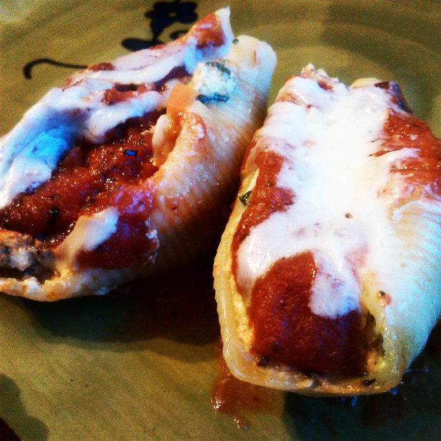

Spinach and Cheese Stuffed Pasta Shells

Description
A stuffed shells recipe for magnificent jumbo pasta bursting with cheesy spinach filling. Simple to make and very good. This recipe is very flexible and additional ingredients can be added to suit individual preferences.
Ingredients
- 32 jumbo pasta shells
- 2 cups ricotta cheese
- 2 (10 ounce) packages frozen chopped spinach, thawed and drained
- 1 cup grated Parmesan cheese
- 2 tablespoons fennel seed
- 2 teaspoons dried basil
- 4 cloves garlic, minced
- salt and pepper to taste
- 3 ½ cups spaghetti sauce
Steps
- Preheat the oven to 350 degrees F (175 degrees C).
- Bring a large pot of salted water to a boil. Gently place pasta shells in boiling water; return water to a boil. Cook until shells are just tender; drain well.
- Squeeze spinach dry and place in a large mixing bowl. Add ricotta, 1/3 cup Parmesan cheese, fennel, basil, and garlic. Season with salt and pepper; mix well.
- Spread 1/2 cup spaghetti sauce evenly over the bottom of a 9x13-inch baking dish.
- Fill each pasta shell with spinach-cheese mixture. Arrange shells, filling-side up, in the baking dish. Spoon remaining spaghetti sauce over shells. Sprinkle remaining Parmesan cheese on top of shells.
- Cover the pan loosely with aluminum foil and bake in the preheated oven until heated through, about 30 minutes.
Home